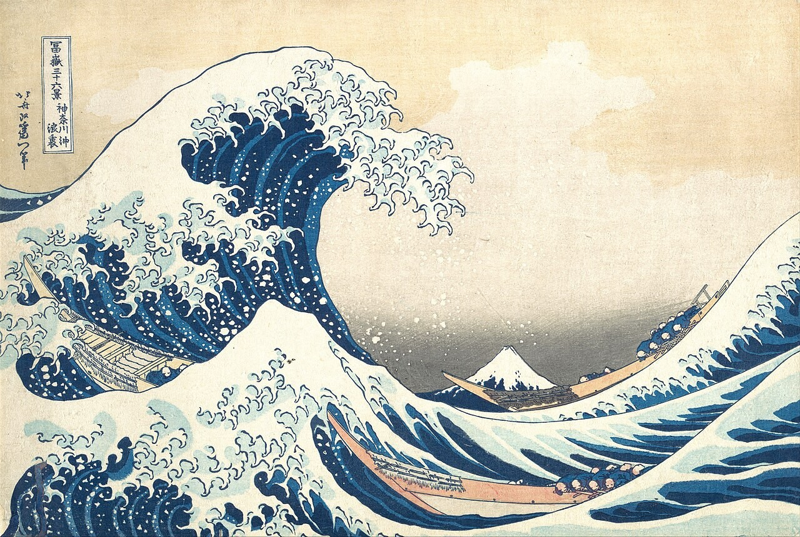

11:52
Thursday 22 October · TV is off
46° Clear
·
Front door locked
·
Any key wakes the TV

Katsushika Hokusai
· Under the Wave off Kanagawa, about 1831 · Public domain
11:52
Standby look “Nothing”: the panel is dark; only the set’s own red standby light shows.